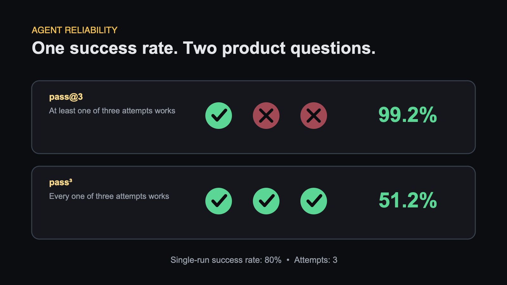

Your Agent Passed Once. Is It Reliable?
An agent completes a task successfully.
What did you learn?
You learned that it can succeed once.
You did not learn that it is reliable.
Agents take multiple steps, call tools, interpret intermediate results, and make choices. Small variations can change the final outcome.
One run hides that randomness.
Run the same task more than once
Suppose an agent has an 80% chance of completing a task correctly.
One run gives you either a pass or a fail. Neither result reveals the underlying 80% rate.
Run the task several times and two useful measures appear:
- pass@k: At least one of k attempts succeeds.
- pass^k: Every one of k attempts succeeds.
The formulas are simple:
pass@k = 1 - (1 - p)^k
pass^k = p^k
For an agent with an 80% single-run success rate and three attempts:
- pass@3 is 99.2%
- pass^3 is 51.2%
Same agent. Same task. Two very different stories.

Choose the measure that matches the product
pass@k is useful when you can try several times and keep the best valid result.
A coding agent is a good example. It may generate three patches, run tests, and keep the one that passes.
pass^k matters when every attempt reaches a user or changes the real world.
A customer-facing booking agent cannot quietly discard two bad conversations and show only the good one. Every conversation counts.
The right metric depends on who sees the failures.
Grade the outcome first
Agents can take different paths to the same correct result.
If the task is "Book a table for two on Friday", check the reservation system.
Is there one booking, for two people, on Friday, under the correct name?
That final state matters more than whether the agent used the exact sequence of tool calls you expected.
After checking the outcome, inspect the path for behaviour that matters independently:
- Did it touch the wrong record?
- Did it expose sensitive information?
- Did it loop unnecessarily?
- Did it spend far more than expected?
Outcome first. Path second.
Small score changes may be noise
Suppose a prompt change improves the score from 78% to 82% on 50 cases.
That looks encouraging. It may also be random variation.
Small datasets produce wide uncertainty. Agent randomness makes it wider.
Before calling a small improvement real:
- run more cases
- run several trials per case
- compare the same cases before and after the change
- read the cases that flipped
The last point is essential. A four-point gain is not automatically good if it fixes easy cases and breaks a critical workflow.
Reliability is a product requirement
Capability and reliability are different.
An agent that succeeds once in ten attempts may demonstrate capability. It is not ready for a customer workflow that must work every time.
Your eval should reflect the reliability the product actually needs.
Three things to remember
- One successful run proves capability, not reliability.
- pass@k and pass^k answer different product questions.
- Check the final state before judging the exact path.
An agent is not reliable because you have seen it work.
It is reliable when repeated evidence shows how often it works.